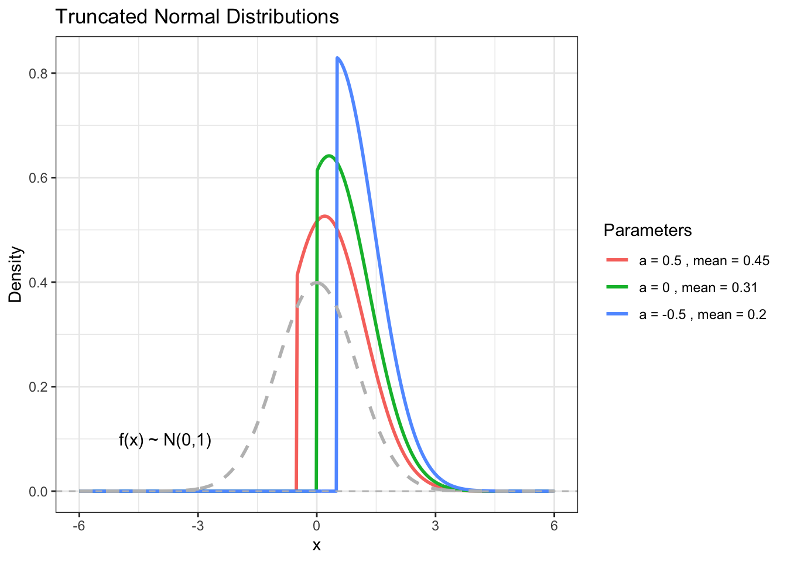

Sometimes the variables we observe are truncated or censored realizations of the underlying distributions from which they arise.
often, this occurs where the appearance of some values of variables is either impossible or conditional on some other process.
observing vote choice depends on registration.
war outcome depends on war onset.
All this points to about 50 years worth of work in economics where econometricians have been figuring out the consequences of truncation and censoring and ways to estimate models that account for the two.
Truncation and Censoring
Truncation and censoring are two different reasons we only observe some part of the distribution of a variable. The difference between the two lies in why we only observe part of the distribution.
A truncated variable is one that only represents part of a distribution because the researcher chooses to examine that part to the exclusion of the remainder of the distribution. The result is that observations where the variable, \(y\) takes on values below (above) a threshold \({\mathrm a}\) are discarded from the sample. The distribution of the observed variable is thus a truncated distribution.
The density of a truncated continuous variable is,
\[
f(x|x>a) = \frac{f(x)}{Pr(x>a)} \nonumber
\]
The distribution of \(x\) is conditional on \(Pr(x>a)\), which makes sense because we only have information on values of \(x\) that exceed \(a\).
code
library(truncnorm)library(ggplot2)# Define parameters for the truncated normal distributionsa_values <-c(0.5, 0, -0.5) #Different truncation pointsmeans <-c(0.45,0.31, 0.2) #Means corresponding to each truncation point. These were eyeballed from the image# Create a data frame to store the density valuesdf <-data.frame()x_values <-seq(-6,6, length.out=500) # x values for density calculations# Generate density values for each distributionfor (i in1:length(a_values)) { a <- a_values[i] mean <- means[i] density_values <-dtruncnorm(x_values, a=a, b=Inf, mean=mean, sd=1) #Note: assumes sd =1 temp_df <-data.frame(x = x_values, density = density_values, a = a, mean=mean) df <-rbind(df, temp_df)}# Create the plot using ggplot2truncated <-ggplot(df, aes(x = x, y = density, color =factor(paste("a =",a, ", mean =",mean)))) +geom_line(size=1) +#Increase line size for better visibilitygeom_hline(yintercept=0, linetype="dashed", color="grey")+#Adds horizontal line at y=0labs(title ="Truncated Normal Distributions",x ="x",y ="Density",color ="Parameters") +theme_bw() +#Clean themetheme(legend.position ="right") +#Legend positionscale_color_discrete(labels=paste("a =",a_values, ", mean =",means)) #Custom legend labels# Add a line for the standard normalstandard_normal <-data.frame(x = x_values, density =dnorm(x_values, mean =0, sd =1))plot <- truncated +geom_line(data = standard_normal, aes(x = x, y = density), color="grey", linetype="dashed", size=1) +annotate("text", x =-5, y =0.1, label ="f(x) ~ N(0,1)", hjust =0)plot

Notice how the means of the distribution shift with the truncation. Also, notice that the truncation illustrated here is strictly “from below” - that is, the truncation or limiting points on the distributions cut off all observations to the left of the truncation point \(a\). Of course, a truncated distribution might be truncated “from above” where exactly the opposite is true.
The moments of the truncated normal will resemble those of the normal, but must account for the truncation. So, whereas \(E[y] = \mu\) in the normal, in the truncated normal,
So the truncated variance is equal to the untruncated variance weighted by the quantity \(1-\delta(\alpha)\). As Greene points out, the boundaries on \(\delta(\alpha)\) ensure the truncated variance above will be smaller than the variance of the untruncated distribution.
Mills Ratio
\(\lambda(\alpha)\) is known as the Inverse Mills Ratio, a quantity that is important to the development of some selection models where the selection is the result of truncation.
The inverse Mills ratio is approximately the likelihood any observation \(i\) is truncated - so it represents the likelihood \(i\) does not make it into the sample.
This is a very direct way to conceptualize the problem of truncation or censoring - some portion of the latent variable, \(y^*\) makes it into the observed sample while some other portion is either excluded altogether (in the truncated case) or is included but coded at the limit (in the censored case). Accounting for those likelihoods is critical to the project of recovering the parameters relevant to the full, untruncated or uncensored distribution.
code
# Binghamton University Colorsbinghamton_colors <-c("#005A43", "#8C2132", "#FFD100", "#000000", "#636466")# X-valuesx <-seq(-3, 3, length.out =200)# Calculate y-valuesmills_ratio <-dnorm(x) /pnorm(x, lower.tail =FALSE)normal_cdf <-pnorm(x)normal_pdf <-dnorm(x)# Prepare data for Highcharter in a more suitable format for the legend to work correctlydata <-data.frame(x =rep(x,3), y =c(mills_ratio, normal_cdf, normal_pdf),series =factor(rep(c("Inverse Mills Ratio", "Normal CDF", "Normal PDF"), each =length(x))))# Highcharter plot WITH LEGENDhchart(data, "line", hcaes(x = x, y = y, group = series)) %>%hc_colors(binghamton_colors[c(1,2,5)]) %>%hc_title(text ="Mills Ratio and Normal Distribution Functions") %>%hc_xAxis(title =list(text ="(μ-a)/σ")) %>%hc_yAxis(title =list(text ="Value")) %>%hc_legend(align ="left", verticalAlign ="bottom", layout ="horizontal") %>%#Legend at bottomhc_exporting(enabled =TRUE) %>%hc_tooltip(headerFormat='', pointFormat ='<b>{series.name}:</b> {point.y:.2f}')
The numerator is the Normal PDF, the denominator is the Normal CDF, each evaluating the standardized difference between the mean of the distribution, \(\mu\), and the truncation point, \(a\) (note: Long refers to this as \(\tau\)).
The horizontal axis is the value of \(\alpha=\frac{\mu-a}{\sigma}\) - negative values indicate \(\mu<a\) and so the portion of the distribution truncated is greater - positive values indicate \(\mu>a\) and thus, the portion of the distribution truncated is smaller.
That quantity indicates the number of standard deviations the mean is either above or below the truncation point.
Censoring
A censored variable is one that only represents part of a distribution because the researcher is unable to examine the remainder of the distribution because it is unobservable. Unobserved values are usually treated as (coded as) the extreme or limiting value. Thus, values of the variable, \(y\), that lie below (above) the threshold, \(a\), are included in the estimation sample, but are all coded as being equal to the limiting or threshold value \(a\) because their true values are not known.
Unlike the truncated distribution, a censored distribution does not cut off observations - rather, those observations are all coded as taking on some uniform value, often the limit of the distribution, very often zero. Consider a variable, \(y^*\) whose realization, \(y\) follows this rule:
The observed variable is equal to the latent variable for values of the the latent variable greater than the censoring point
The observed variable equals the censoring value (the limit) otherwise.
Two questions - first, does \(i\) exceed the censoring point, and second, if so, by how much?
This ought to raise the specter of the zero-altered event count models which do share an important characteristic with models of censored variables.
Censored variables arise from mixtures of discrete and continuous distributions - so do split population models like the zero-altered event count models.
How does the censored variable arise from a mixture distribution? Consider its two parts. First, speaking of the normal case, the probability \(y=0\) is given by,
The probability of nonlimit observations is a density for \(y^* > 0\), so \(y\) has the density of \(y^*\). The moments of the censored normal arise much like those of the truncated normal, though relying on this mixture.
The case where the censoring point is zero is a good place to look at the mean of the censored normal:
The mean of the censored normal is composed of two parts. The first term accounts for observations above the limit; the second accounts for or weights the expectation by the limit observations. This should be most clear in the presence of \(\lambda\) in the second term. Now, let’s write all this in a more general way (where we don’t constrain the censoring to occur at zero).
If the censoring value equals zero, this reduces to the special case discussed above.
A Model for Censored Data
The most common and well-known model for censored data is the Tobit model - this models has seen some controversy in recent years, some of which is discrediting (see Johnston & DiNardo (1997) for a somewhat damning critique). The tobit model does not make too many appearances in the political science literature, perhaps because political scientists have resorted to the selection-style models as ways to deal with censoring/truncation. Nevertheless, let’s walk through the tobit model briefly and give an illustration.
The model treats a censored variable just as described above, but treats the uncensored observations as arising as a function of a systematic component (\(x_i \beta\)) and a random component (\(\varepsilon_i\)).
Think about what these two terms contribute to the likelihood. The first is the normal PDF of the difference between \(y_i\) and \(\hat{y_i}\) - it resembles the normal (linear) likelihood. The second is the normal CDF evaluation of the difference between the censoring limit and \(\hat{y_i}\) - it resembles the probit likelihood. Both are normalized by \(\sigma\). In the second (censored) term, we’re evaluating the number of standard deviations between the censoring indicator and \(x_i \beta\) on the normal CDF, and using that sum as a way to weight the regression-like term for the uncensored observations.
Sample Selection
One of the best-known statistical models for dealing with censoring or truncation is the sample selection model.
The selection model is based on the idea of “incidental truncation.”
Incidental truncation occurs when the observed sample arises according to values of some other unobserved or unmeasured variable.
Based on the values of that variable, some observations are included, others are excluded.
Incidental Truncation
The classic example in economics has to do with women’s wages in the workplace.
Women in the sample are those in wage-earning jobs, and thus truncated from the sample (incidentally) are women not in the workplace.
The truncation is incidental in the sense that the researcher did not choose to exclude these women from the sample.
Their observed behavior is what removes them from the sample.
The value of one variable (participation in the workforce) influences the sample of observed wages.
This is what might make us suspicious that the source of incidental truncation might not be random, which means the sample itself is not random.
Incidental truncation is more like censoring than pure truncation.
Like censoring, the incidental truncation is an observability problem, not a function of analyst’s choice.
Solve the problem in the model by treating those truncated observations as censored.
The sample includes women with jobs and excludes all other women.
Instead, measure the sources of the truncation directly - include women without jobs in the sample and treating those women who don’t work as censored.
Sticking with this example, suppose we estimate a model of women’s wages such that
where \(y^{*}_{1}\) indicates whether an individual participates in the workforce - if the vector \(z_i \gamma + \varepsilon_0i >0\), then there is some positive chance of participation, and \(z\) are variables that predict workforce participation. It should be clear that \(y_2\) is only observed if \(y^{*}_{1}>0\) - the observed manifestation of this, of course, is that \(y^{*}_{1} = 1\).
where the numerator is the covariance of the error terms, and the denominator is the variance of the error term for the selection equation. This produces (after some math I’ll skip):
You can see that if \(\sigma_2\), the variance of the error term in the wage equation, is not zero, then the ratio in the last equation will shape the expectation of the error term in the wage equation - under this condition, the error in the wage equation will not have mean zero and the estimates of the model will be biased. Note as well that the second term above is the Mills ratio again. The estimates of the model are biased by the exclusion of the variables that comprise the Mills ratio. Put another way, the model is biased by the extent to which error variance in the model is correlated with the Mills ratio where, as usual, the ratio is the likelihood of being excluded from the sample, in this case, via incidental truncation.
So to correct the wage model, we need to estimate,
You should be able to see by now a logical stream of thought here:
incidental truncation biases estimates.
it has the same effect as excluding a relevant variable.
if we can measure that variable, say via the Mills ratio, we can correct the problem.
the Mills ratio is parameterized as a function of a set of variables \(z\); we can theorize on the sources of incidental truncation and model them by:
estimate a probit model for whether women work or not, \(y^{*}_{1}= z_i \gamma\).
use these estimates to construct the Mills ratio.
estimate an OLS model (the wage equation) including the \(X\) variables and the Mills ratio. This is Heckman’s two-step model. The standard errors require fixing - this can be estimated simultaneously in ML instead.
Examples of the Selection Model
Let’s run through some examples of the Heckman set-up, but I’ll do so using a different form of the model known as the censored probit (developed by Meng and Schmidt (1985)).
Censored Probit
The selection and outcome equations have binary dependent variables and are both probit models.
The model is incidentally truncated in the sense that the outcome of interest is only observed for \(y_2|y_1=1\) - the problem is \(y_1\) is unobserved.
However, if we measure \(y_1\), estimate an equation predicting it, and condition our estimates of \(y_2\) on that selection equation, we’ve reintroduced the truncated observations, so they are now censored.
They are censored in the sense that some of the selection observations do not “fail” and so observing any outcome is impossible - it’s censored. Other observations in the selection equation do “fail” and so we do observe some outcome.
There’s a lot of interest in world politics in what makes countries win wars, and especially in the observation that democratic states rarely lose wars. So it has been commonplace to estimate models predicting whether states win or lose based on regime as follows:
code
wars <-read_dta("/Users/dave/Documents/teaching/606J-mle/2022/slides/L13_selection/code/clarkreed.dta")#new df with only rows where wl is not NAwardyads <- wars[!is.na(wars$wl),]# recode wl to 0,1wardyads$wl <-ifelse(wardyads$wl ==2, 1, 0)# filter duplicate and war 25wardyads <- wardyads %>%filter(duplicate ==0& war !=25|is.na(war))# Probit regressionwarmodel <-glm(wl ~ democ + cap, data = wardyads, family =binomial(link ="probit"))modelsummary(list("War Winning"= warmodel))
War Winning
(Intercept)
-0.429
(0.139)
democ
0.080
(0.028)
cap
4.999
(1.653)
Num.Obs.
180
AIC
236.3
BIC
245.8
Log.Lik.
-115.126
F
8.468
RMSE
0.48
code
# # Predictions if in estimation sample# wardyads$xb <- predict(warmodel, type = "link") # Linear predictor# wardyads$py1 <- predict(warmodel, type = "response") # Probability# # # Calculate Inverse Mills Ratio# wardyads$mills <- dnorm(wardyads$xb) / (1 - pnorm(wardyads$xb))# # # Plotting using ggplot2# library(ggplot2)# # # Scatter plot of mills vs xb# plot1 <- ggplot(wardyads, aes(x = xb, y = mills)) +# geom_line() +# labs(title = "Inverse Mills Ratio vs. Linear Predictor",# x = "Linear Predictor (xb)",# y = "Inverse Mills Ratio")# # # # Scatter plot of mills vs py1# plot2 <- ggplot(wardyads, aes(x = py1, y = mills)) +# geom_line() +# labs(title = "Inverse Mills Ratio vs. Predicted Probability",# x = "Predicted Probability (py1)",# y = "Inverse Mills Ratio")# #
Each observation is a participant in a war between 1815 and 1992.
Stronger states win more; democratic states win more.
But, is this because democratic states choose the wars they fight with an eye toward winning what with losing being costly in an electoral sense? If this is the case, then we might argue the dependent variable is incidentally truncated - we do not include in the sample any cases where states do not fight - compare this to the wage question above. The incidental truncation occurs due to the (purposefully) chosen value of another variable: do you fight a war?
One way we might think to deal with this is by dealing with the fact that some states don’t fight wars - if we can include these states in the sample, the sample is no longer truncated.
Suppose we code all states that don’t fight wars as zero along with the states that lose wars, and states that win are still coded one.
The variable is no longer truncated - it is censored at zero by the unobserved difference between states that don’t fight and those that fight but lose.
code
# model of all wars; zero is lose or no war, mixing censoringwars <-read_dta("/Users/dave/Documents/teaching/606J-mle/2022/slides/L13_selection/code/clarkreed.dta")# recode wl to 0,1; 0 for all NA wars$wlcensored <-ifelse(wars$wl ==2, 1, 0)wars$wlcensored[is.na(wars$wl)] <-0#filter wars to only include rows where repeat==0 and war!=25wars <- wars %>%filter(duplicate ==0& war !=25|is.na(war)) # Probit regressionwarcensored <-glm(wlcensored ~ democ + cap, data = wars, family =binomial(link ="probit"))modelsummary(list("Censored Cases: Win=1, Lose/Not Fight=0"= warcensored))
Censored Cases: Win=1, Lose/Not Fight=0
(Intercept)
-2.453
(0.056)
democ
0.001
(0.011)
cap
3.865
(0.519)
Num.Obs.
8864
AIC
966.2
BIC
987.5
Log.Lik.
-480.101
F
28.826
RMSE
0.10
Notice that the inferences change as does sample size (necessarily, of course). This approach obviously suffers from the problem that zero can mean two substantively different things - states don’t fight or they do fight but lose. We should never do this.
Instead, let’s implement the Heckman-style procedure by hand - we’re going to estimate a selection equation and an outcome equation. The selection equation will predict whether states fight wars or not, and the outcome equation will predict whether states win wars or not. The selection equation will only contain the observations where states fight wars.
After the selection equation, we’ll generate the predicted probability a dyad fights a war - we’ll include this in the outcome equation to control for the chances of selection into the outcome model. We’re measuring the chances any observation is not censored.
code
# roll your own heckmanlibrary(sampleSelection)wars <-read_dta("/Users/dave/Documents/teaching/606J-mle/2022/slides/L13_selection/code/clarkreed.dta")wars <- wars %>%filter(duplicate ==0& war !=25|is.na(war)) #Selection equation (probit)selection_equation <-glm(wardicot ~ cap + democ, data = wars, family =binomial(link ="probit"))# new df with estimation sample from selection equation modelwars$used <-TRUEwars$used[na.action(selection_equation)] <-FALSEselection_sample <- wars %>%filter(used=="TRUE")# generate in sample predicted probabilitiesselection_sample$pry <-predict(selection_equation, newdata = selection_sample, type ="response")# recode wl to 0,1selection_sample$wl <-ifelse(selection_sample$wl ==2, 1, 0)# Outcome equation (censored probit)outcome_equation <-glm(wl ~ polini + poltarg + init + concap + capasst + qualrat + terrain + straterr + strat1 + strat2 + strat3 + strat4 + pry, data = selection_sample, family =binomial(link ="probit")) modelsummary(list("Selection: Fight/Don't"=selection_equation, "Outcome: Win/Lose"=outcome_equation))
Selection: Fight/Don't
Outcome: Win/Lose
(Intercept)
-2.088
-5.898
(0.041)
(2.139)
cap
3.390
(0.458)
democ
-0.019
(0.009)
polini
0.071
(0.042)
poltarg
0.036
(0.029)
init
1.262
(0.364)
concap
3.541
(0.706)
capasst
4.873
(0.812)
qualrat
0.051
(0.034)
terrain
-11.807
(4.070)
straterr
3.803
(1.309)
strat1
8.006
(3.739)
strat2
-1.144
(321.198)
strat3
3.705
(1.933)
strat4
3.300
(1.448)
pry
-0.416
(9.042)
Num.Obs.
8864
180
AIC
1718.2
139.7
BIC
1739.4
184.4
Log.Lik.
-856.076
-55.849
F
27.742
3.927
RMSE
0.14
0.32
A more precise way to do this would be to use the selection model to compute the Mills ratio, \(\frac{\phi(x\beta)}{1-\Phi(x\beta)}\), and include that in the outcome equation. This is the two-step Heckman structure (though the standard errors are wrong).
An appropriate way to estimate this model is to use the sampleSelection package in R. The model we’ll use is the censored probit (Meng and Schmidt (1985)) - it’s a simultaneous equations version of the two-step process we implemented above.